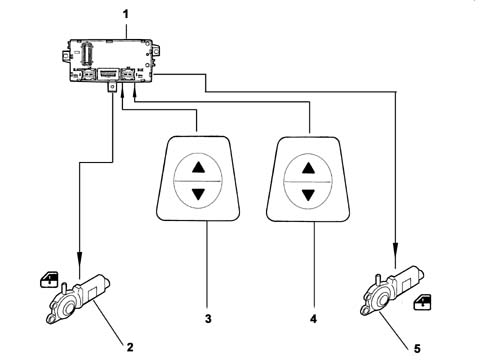

7005M front electric windows
- Path
- Descriptions > 70 FITTINGS > 7005 PASSENGER COMPARTMENT FRONT SIDE DOORS > 7005M front electric windows
- Kind
- system description
- Applies to
- all engines; all production periods
- Interactive page
- https://sloeber94.github.io/elrnDB-fPnd/en/#/2750977
Applies to: all engines; all production periods
The front door electric windows are operated by switches on the facia, and are connected in accordance with the following diagram.

1 - Body Computer node 2 - Left front electric window motor 3 - Right front electric window motor 4 - Left front control switch 5 - Right front control switch
Applies to: all engines; all production periods
They may be controlled both manually and automatically, in accordance with the following logic:
- manual operation is by pressing the control switch for between 50 ms and 300 ms;
- automatic operation is by pressing the control switch for over 300 ms.
The operation of the electric window is interrupted in the following cases:
- when automatic movement is in progress and the control switch is pressed again (opening or closing);
- at the end of travel (top or bottom), in both automatic and manual movement.
When the ignition is switched off, the electric windows function is active for about 2 minutes, in manual mode only. - When one of the two doors is opened, this function is inhibited.